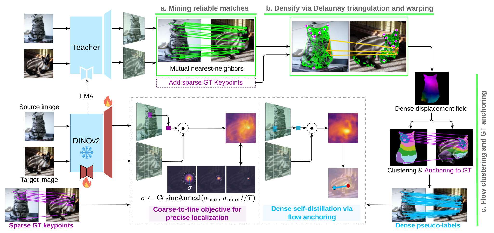
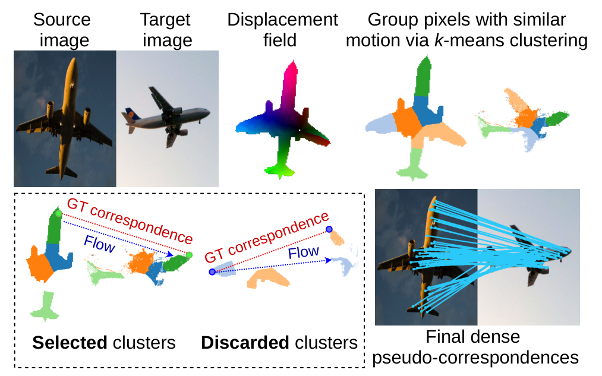
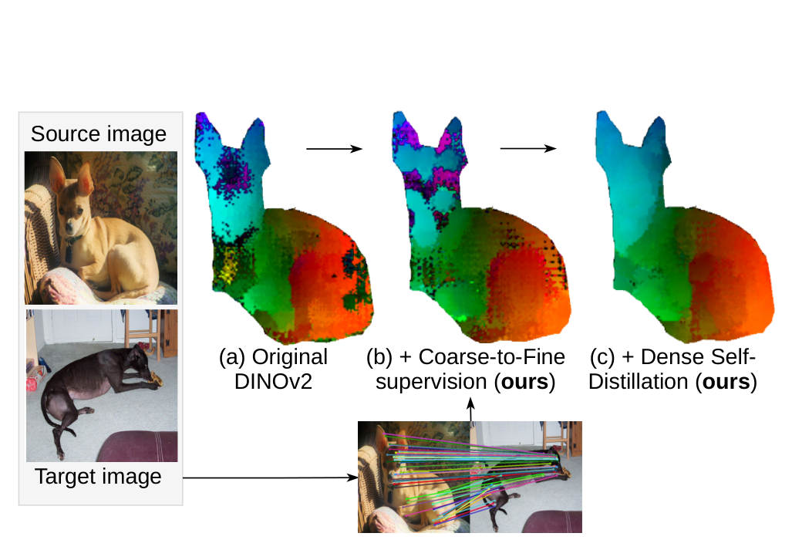

MARCO 深读：语义对应的模型在 benchmark 上很强，为什么一换没见过的关键点就崩？
导读。语义对应（semantic correspondence）要做的事很朴素：给两张图里语义等价的物体，把"这只猫的左眼"对到"那只猫的左眼"，建立像素级的语义匹配。它是图像编辑、姿态估计、风格迁移、affordance 理解的底层零件。这两年的主流配方是 DINOv2 + Stable Diffusion 双编码器——DINOv2 给稳健语义、扩散给细粒度空间结构，准是准，但臃肿到近 10 亿参数。更要命的一点被长期忽略：这些模型是用稀疏关键点（每图通常 ≤20 个标注）训出来的，于是它们只学会了"标注过的那几个点"——一旦查询一个没见过的关键点，或换一个没见过的物体类别，精度就大面积塌方。这道"benchmark 高分 vs 真实可用性"的裂缝，正是 MARCO 要补的。MARCO 的回答出人意料地朴素：只用单个 DINOv2 主干（外挂 adapter + 上采样头，参数开销 <5%），不引入扩散、不引入 3D 模板、不依赖深度模型，靠一套新的训练框架把稀疏标注 densify 成整块物体表面的稠密监督。两件武器：① coarse-to-fine 的高斯 RBF 分布匹配目标，用余弦退火把核宽 $\sigma$ 从 3 缩到 1，先学区域级对齐、再逼出 subpatch 级精度；② dense self-distillation via flow anchoring——把 EMA 教师挖出的互最近邻（MNN）seed，经 Delaunay 三角剖分 + 分片仿射 warp densify 成稠密位移场，再在位移空间聚类、用 GT 关键点 anchor 过滤错配，把一把关键点变成数千条可靠伪对应。结果：SPair-71k / AP-10K / PF-PASCAL 全面 SOTA，最严格阈值 PCK@0.01 +8.9，未见关键点 SPair-U +5.1、未见类别 MP-100 +4.7，同时比扩散双编码器小 3×、快 10×。

一、核心问题：稀疏关键点监督，把一个本来"满屏都对得上"的特征空间，缩成了只认那几个点
问题。语义对应的标准设定是：给定源图与目标图，对源图上的某个像素（语义关键点，如"椅子的左前腿"），在目标图里找到指向同一语义部位的像素。难点在于同一部位会在姿态、纹理、视角上剧烈变化；而监督天生稀疏——人工标注一张图通常只给不到 20 个关键点。
常规解法为什么不够。这两年的主流是把 DINOv2（强语义）和 Stable Diffusion（强空间细节）拼成双编码器，靠两者互补刷高 benchmark。但这条路有两个代价：(1) 臃肿——要从两个编码器各抽一遍特征，参数逼近 10 亿；(2) 更隐蔽也更致命的——用稀疏关键点训出来的模型泛化很差，在没见过的关键点和没见过的类别上同时失效。论文（与并行工作 Jamais Vu）都点出：这暴露了"benchmark 表现"和"真实可用性"之间的鸿沟，因为真实查询的点，几乎从不是标注里出现过的那几个。
引导问题：为什么"稀疏监督"会直接导致"泛化崩"？这两件事的因果链是什么？
先想一个反直觉的事实：DINOv2 在没被微调之前，它的特征其实已经能在整块物体表面上给出一片"部分自洽"的对应流（Fig. 2a）。也就是说，泛化能力原本就在预训练特征里。那监督做了什么？
监督把它收窄了。当你只用眼睛、鼻子这二十来个点的 loss 去微调，梯度只会把"这些标注点周围"的表示磨得更准，而整块表面的几何自洽性反而被破坏——表示塌缩（collapse）到标注点附近。Fig. 2b 把这件事拍得很清楚：监督微调后，原本铺满全身的对应流，收缩成只围着标注点的几团。论文一句话点破：稀疏监督会让微调后的模型在未见关键点上还不如冻结的 DINOv2。
这个因果链有数字直接背书（来自消融表 Tab. 4，下文详述）。冻结 DINOv2 在 SPair-U（未见关键点）上是 54.9；MARCO 去掉稠密自蒸馏、只留稀疏监督（"Ours w/o dense loss"）反而掉到 41.8——比冻结的还低 13 分。这不是泛化"变弱了一点"，是稀疏监督主动把预训练里自带的泛化能力磨掉了。MARCO 的全部设计，都是为了把这 13 分（以及更多）赚回来。
并行工作的路与 MARCO 的路。并行的 Jamais Vu [32] 也意识到这个塌缩，它的解法是把物体点 lift 到3D 标准模板（canonical template）上。但 3D 模板有三个绑死：① 模板是类别专属的，换类别就失效；② 对高度可形变物体建模困难；③ 还要外挂一个单目深度模型估 3D 几何。MARCO 反其道而行——不引入任何预定义 3D 结构、不依赖类别先验、不需要外部深度，而是在训练过程中直接从正在演化的特征空间里发现稠密对应。换句话说，Jamais Vu 靠"外部几何先验"补泛化，MARCO 靠"把特征空间里本就存在的可靠结构挖出来并铺满"补泛化。
二、贡献拆解：一个单主干模型 + 一套稠密化训练框架 + 一个更难的泛化基准
论文在 §1 末把贡献明确列为三条，我按"它各自补上了哪一半问题"来转述：
- 一个统一的、可泛化的对应模型，且算力开销极小。只用单个 DINOv2 主干 + <5% 的参数开销（adapter + 上采样头），就同时拿到像素级 SOTA 精度与对未见关键点/类别的稳健泛化。这条对应 teaser 的 (a)+(d)：既准又轻。
- 证明稀疏关键点监督可以被 densify 成整块物体表面的稠密对应——靠的是 DINOv2 特征空间里自发涌现的可靠匹配，而不依赖 3D 模板、类别先验或外部深度。这是全文的技术内核（§3.3 的 flow anchoring）。
- 提出一个更难的泛化基准（基于 MP-100 [48] 构建），同时测 (i) 已知类别里的未见关键点和 (ii) 未见类别。论文指出现有基准（如 PF-WILLOW）太简单、SPair-U 规模太小（每类才加 4 个未见点），不足以评测真正的泛化。
读者视角的一句提炼。MARCO 真正新的不是"用 DINOv2 做对应"（那是老话题），而是把"稀疏 → 稠密"这步做成了一个自蒸馏闭环：模型自己当老师（EMA），从自己当前的特征里挖可靠匹配、densify 成稠密伪标签、再监督自己——而 GT 关键点只充当过滤错配的锚点，不再是唯一的监督来源。监督从"几十个点"变成"几千条对应"，泛化自然回来了。
三、数据与基准：训练只用 SPair-71k，泛化要在没见过的关键点和类别上考
MARCO 的实验分两层：标准 in-domain 基准（训练域内）和零样本泛化基准（训练后直接迁移，不再微调）。
| 数据集 | 规模 | 角色 | 考的是什么 |
|---|---|---|---|
| SPair-71k [34] | 53.4k train / 5.4k val / 12.2k test 对，18 类，每图 20 关键点 | 主训练集 + in-domain 测试 | 域内精度（各阈值 PCK） |
| PF-PASCAL [13] | 2.9k train / 299 val / 308 test 对，20 类 | in-domain 测试 | 域内精度（已接近饱和） |
| AP-10K [51] | 261k train / 17k val / 36k test 对，54 物种，17 关键点 | in-domain 测试（动物姿态） | 同物种 / 跨物种 / 跨科 三档迁移 |
| SPair-U [32] | SPair-71k 每类平均 +4 个未见关键点 | 零样本（训于 SPair-71k） | 未见关键点（规模有限） |
| MP-100 协议（本文新提） [48] | ~150k 关键点，100 类，归并成 5 个宏域 | 零样本（训于 SPair-71k） | 未见关键点 + 未见类别（更难） |
新基准为什么有必要。论文论证：PF-WILLOW 难度太低、不适合测泛化；SPair-U 虽首次引入未见关键点，但每类只加约 4 个点、规模太小。于是作者从 MP-100 重建一个协议，把 100 类归并成 5 个宏域（人脸 / 服饰 / 动物身体 / 家具 / 动物脸），沿两个泛化轴评测：(i) 未见关键点——已知类别但标注全新的 landmark（如把 person 类从 SPair 的 7 个点扩到人脸 68 个 landmark）；(ii) 未见类别——训练里根本没出现过的物体类型（家具、动物脸、动物身体），并移除与 SPair-71k 的重叠。

评测指标：PCK@α。沿用前人 [28,32,53,54]，用 Percentage of Correct Keypoints：一个预测点若落在距 GT 关键点 $\alpha\cdot\max(h,w)$ 范围内（$h,w$ 为物体 bbox 尺寸）即算正确，报逐图平均的 PCK。$\alpha$ 越小越严格——$\alpha=0.01$ 是全文最吃精度的阈值，也是 MARCO 增益最大的地方。
四、Pipeline：单主干 + 两条互补目标，训练时跑一套自蒸馏闭环
MARCO 的架构刻意"极简主义"：冻结的 DINOv2 ViT-L/14 主干 + 两个轻量外挂件，总参数开销 <5%。整套训练由两条目标驱动——一条管精度（coarse-to-fine），一条管泛化（dense self-distillation）。先看全景图。
{kind=link}

两个架构外挂件（§3.1）
- Adapter（AdaptFormer [4]）。在 transformer 高层逐 token 插一个瓶颈结构：先降维 $W_{\text{down}}\in\mathbb{R}^{D\times d}$、GELU、再升维 $W_{\text{up}}\in\mathbb{R}^{d\times D}$（$d\ll D$），以残差方式加回。主干权重全程冻结，只学这两个矩阵——用极小参数 enrich 高层特征的几何意识。
- 上采样头。DINOv2 每个 token 对应一个 14×14 的 patch，粒度太粗、限制了定位精度。前人常靠 CNN matcher / cross-attention 这类重模块去 refine，但代价大。MARCO 改用一个轻量上采样层把特征分辨率提 ×4：先 $2\times2$ 转置卷积、GELU、再 $3\times3$ depthwise 卷积，恢复 sub-patch 结构而几乎不加算力。
五、方法核心：一条退火的 RBF 目标管精度，一条 flow-anchoring 自蒸馏管泛化
5.1 Coarse-to-fine 目标：为什么不直接回归坐标，而要匹配一个会变窄的分布？
引导问题：前人用 soft-argmax 回归关键点坐标 + $L_2$ loss，看起来天经地义，它错在哪？
想象目标图里有两个长得很像的候选位置（比如对称的左右眼），soft-argmax 会取它们的加权平均位置。$L_2$ loss 会把预测往这个平均拉。
于是在多模态分布下，soft-argmax + $L_2$ 会把预测驱向竞争模式的均值，而不是逼出一个尖锐的单峰——产生过平滑的响应，定位精度被拖垮。这是已知的不稳定性 [3,38,50]。
MARCO 因此把坐标回归换成分布匹配：取源描述子 $\hat F^s[p_i^s]$，与目标特征格点算稠密相似度图 $S(p_i^s,u)=\langle\hat F^s[p_i^s],\hat F^t[u]\rangle$，再监督它去匹配一个以 GT 关键点为中心的高斯 RBF 核，用交叉熵（CE）loss：
这里有一个真张力，所以不能用固定 $\sigma$。消融（Tab. 4）直接量出来：固定 $\sigma=1$ 把严格阈值做到最好（27.8@0.01）但粗阈值（81.0@0.10）和未见泛化（62.2）都掉；固定 $\sigma=3$ 正好相反（19.5@0.01，86.8@0.10）。两个固定值各自塌一头。MARCO 的解法是余弦退火：训练初期用宽核（$\sigma_{\max}=3$）促成稳定的区域级对齐，再逐步缩到窄核（$\sigma_{\min}=1$）逼出 sub-patch 级定位：
5.2 Dense self-distillation via flow anchoring：把一把关键点 densify 成数千条可靠对应
coarse-to-fine 解决了精度，但它仍只在标注点上有监督，继承了稀疏监督的偏置（Fig. 2b 的塌缩还在）。要补泛化，必须把监督铺满整块物体表面。MARCO 的做法分三步，全程用 EMA 教师（学生参数的指数滑动平均 $\theta_T\leftarrow\beta\theta_T+(1-\beta)\theta_S$）生成伪标签，稳定学习。
第一步：挖可靠 seed（互最近邻）。对教师上采样特征，每个源 patch $u$ 找它在目标里最相似的 $\mathrm{NN}^{s\to t}(u)$，反向也找 $\mathrm{NN}^{t\to s}(v)$，只保留双向都互指的对：
第二步：densify（Delaunay 三角剖分 + 分片仿射 warp）。取 seed 的源关键点集，做 Delaunay 三角剖分把它们的凸包切成不重叠三角形；每个源三角形 $\tau$ 的三个顶点换成各自的匹配目标点，就定义出目标三角形 $\tau'$；对每对三角形估一个仿射变换 $W_{\tau\to\tau'}$，把三角形内每个像素都映射到目标。所有三角形的仿射拼成一张连续的分片仿射 warp，得到稠密位移场：
第三步：flow anchoring（聚类 + GT 锚定，过滤错配）。稠密位移场难免有错——对称（飞机左翼配到右翼）、遮挡、模型误差。怎么知道哪片位移可信？两个条件：(i) 局部运动一致 + (ii) 与 GT 对应一致。实现：在位移空间用 k-means 聚类（不手调 k——故意 over-cluster 再贪心合并到 BIC 最大），把"运动一致"的像素归到同一团 $\Omega_n$；然后只保留那些区域里恰好含一对 GT 关键点的团（anchor 到 GT）：
{kind=link}

学生用 $L_2$ 回归，而不是 CE——为什么这次反而用回归？因为伪标签天生有噪，再用 CE 那种"强制对齐一个尖锐高斯先验"会把噪声也学死。所以学生改用宽松的 $L_2$：
{kind=link}

六、训练配置
- 主干 / 可学习件：DINOv2 ViT-L/14 [37]，主干冻结；只训上采样头和最后 12 层的 AdaptFormer [4] block。
- 优化：Adam [21]，学习率 $1\times10^{-4}$；教师 EMA 动量 $\beta=0.999$。
- 核宽退火：$\sigma_{\max}=3$、$\sigma_{\min}=1$（余弦退火，式 3）。
- 训练规模：10 epochs，batch size 16；训练时默认用 SAM [22] 物体 mask 限制像素（沿用 [10,31,32]）。
- 推理：用 Window soft-argmax（同 [32,54]）。
- 效率：单主干 323M 参数 vs 双编码器 950M（约 3× 更小、10× 更快，RTX 4090，Fig. 1d）。
论文未说明 / 估算声明。论文正文未披露训练总 GPU 卡数与墙钟时间（仅给 epoch/batch/优化器/LR），故本文不做 GPU-hours 估算（任何此类数字都只能"按论文披露数字粗略估算，不等同于实际账单"，而论文连可估的卡时基数都未给）。$\sigma$ 退火总步数 $T$、adapter 瓶颈维度 $d$ 的具体取值等细节论文称见 Supp. Mat.，正文未全列。
七、实验结果：域内 SOTA，且在最严格阈值与最难泛化上赢得最多
7.1 标准 in-domain 基准（论文 Table 1）
下表为论文 Table 1 的代表性转写（原表含更多无监督/弱监督行与 PF-PASCAL 三个阈值，这里保留各家最强代表 + MARCO 两个变体；完整行见原文）。指标为逐图 PCK(%)，越高越好。
| 方法 | 编码器 | SPair-71k @0.01 | @0.05 | @0.10 | AP-10K(C.F.) @0.10 | PF-PASCAL @0.05 |
|---|---|---|---|---|---|---|
| DINOv2+NN [53] | DINOv2 | 6.3 | 38.4 | 53.9 | 47.4 | 63.0 |
| SD+DINOv2（监督）[53] | DINOv2+SD | 9.6 | 57.7 | 74.6 | 65.8 | 80.9 |
| GECO [14] | DINOv2 | 14.2 | 59.6 | 73.6 | 76.6 | 80.5 |
| Jamais Vu [32] | DINOv2+SD | 20.5 | 71.9 | 82.5 | — | — |
| Geo-SC [54]（前 SOTA） | DINOv2+SD | 21.7 | 72.8 | 83.2 | 78.5 | 85.3 |
| MARCO（不限 mask） | DINOv2 | 26.6 | 75.5 | 86.7 | 82.5 | 90.3 |
| MARCO† (限 mask) | DINOv2 | 27.0 | 77.6 | 87.2 | 83.4 | 91.1 |
三点读法。(1) 越严格越赢：在 PCK@0.01 上 MARCO 比 Geo-SC 高 +5.3（SPair-71k）、+10.0（AP-10K）——细粒度定位是 sub-patch 上采样头 + coarse-to-fine 退火的直接回报。(2) 跨科最难处增益最大：AP-10K 跨科（cross-family）@0.10 上 MARCO 比 Geo-SC 高约 +4.9。(3) 用 bbox 代替 SAM mask 结果几乎不变——说明 MARCO 不依赖精确分割，bbox 这种廉价框就够。而且这一切是单 DINOv2 主干做到的，对手都是 DINOv2+SD 双编码器。
7.2 泛化：未见关键点（SPair-U）与未见类别（MP-100）
训练只在 SPair-71k，零样本测 SPair-U 和 MP-100。论文 Table 2（MP-100，PCK@0.10，完整 7 行转写）：
| 方法 | 未见关键点·人脸 | 未见类别·服饰 | 未见类别·动物身体 | 未见类别·家具 | 未见类别·动物脸 |
|---|---|---|---|---|---|
| DINOv2 [37] * | 66.2 | 44.7 | 36.1 | 44.2 | 33.3 |
| DIFT [43] * | 87.3 | 48.2 | 31.0 | 46.9 | 26.5 |
| SD+DINO [53] * | 85.3 | 50.2 | 36.1 | 49.2 | 39.6 |
| GECO [14] | 82.9 | 41.7 | 31.9 | 48.1 | 38.2 |
| Geo-SC [54] | 85.2 | 42.9 | 38.9 | 49.6 | 49.2 |
| Jamais Vu [32] | 85.5 | 45.7 | 39.3 | 52.7 | 47.7 |
| MARCO（ours） | 87.5 | 55.9 | 42.3 | 60.4 | 52.6 |
关键对比。MARCO 在每一个宏域都最高：人脸（未见关键点）+2.0 超 Jamais Vu；服饰 +10.2、家具 +7.7 超 Jamais Vu；动物身体 +3.0、动物脸 +4.9。最值得注意的是趋势——Geo-SC 是 in-domain 最强（表 1），但一出域就掉得厉害；Jamais Vu 为泛化设计、出域掉得少但 in-domain 偏弱。MARCO 不是"用域内换泛化"，而是两头都涨。
SPair-U（未见关键点，论文 Table 3）逐类 18 项 + 平均，篇幅所限只转写平均列（全表 18 类见原文）：
| 方法 | avg PCK@0.10 |
|---|---|
| DINOv2 [37] *（冻结） | 54.9 |
| DIFT [43] * | 47.4 |
| DINOv2+SD [53] * | 59.4 |
| Geo-SC [54] | 56.9 |
| Jamais Vu [32]（次优） | 62.4 |
| MARCO（ours） | 67.5 |
MARCO 平均 67.5，比次优的 Jamais Vu 高 +5.1。注意一个细节：监督方法 Geo-SC（56.9）没比冻结 DINOv2（54.9）高多少——再次印证稀疏监督在未见关键点上几乎白训；而 MARCO 把它从 54.9 拉到 67.5。

八、消融：到底是哪一步在补泛化？
论文 Table 4 在 SPair-71k（域内，看 @0.01 / @0.10）与 SPair-U（未见关键点，看 @0.10）上分组消融——每组只改一个变量、其余固定。完整转写如下：
| 组 | 配置 | SPair-71k @0.01 | @0.10 | SPair-U @0.10 |
|---|---|---|---|---|
| 架构 | DINOv2（冻结） | 6.3 | 53.9 | 54.9 |
| + Adapter | 14.4 | 76.9 | 60.7 | |
| + Upsampling（ours） | 27.0 | 87.2 | 67.5 | |
| GT 监督 | 固定 σ=3 | 19.5 | 86.8 | 66.6 |
| 固定 σ=1 | 27.8 | 81.0 | 62.2 | |
| Coarse-to-fine（ours） | 27.0 | 87.2 | 67.5 | |
| 稠密自蒸馏 | 无稠密 loss | 26.8 | 85.6 | 41.8 |
| + Raw flow（原始流） | 25.2 | 84.6 | 49.6 | |
| + MNN 匹配 | 26.5 | 85.9 | 52.5 | |
| + Delaunay & warp | 26.7 | 86.2 | 64.7 | |
| + GT anchor（ours） | 27.0 | 87.2 | 67.5 |
三组各自的故事。
- 架构组：adapter（@0.01: 6.3→14.4）和上采样头（→27.0）各贡献一大截 sub-patch 精度——这两个轻量件就把冻结 DINOv2 变成了精确对应主干。
- GT 监督组：印证了 §5.1 的张力——固定 σ=1 域内细粒度最好（27.8@0.01）但泛化掉（62.2），固定 σ=3 反过来；退火同时保住两头（27.0 / 87.2 / 67.5）。
- 稠密自蒸馏组（最关键的一组）：这是一条干净的上升阶梯，专看 SPair-U 这列——无稠密 loss 41.8（比冻结 DINOv2 的 54.9 还低，稀疏监督把泛化磨没了）→ 原始流 49.6 → MNN 52.5（仍不如冻结的，−2.4）→ +Delaunay densify 64.7（+12.2，densify 是最大单跳）→ +GT anchor 67.5（过滤对称/遮挡错配再 +2.8，且不伤域内）。每一步都把泛化往上抬，densify 这一跳贡献最大。
更多消融（Window soft-argmax、bbox vs mask、更多超参）在 Supp. Material，正文未给完整数表，此处不逐项转写。
九、局限与复现门槛
- 仍依赖稀疏 GT 关键点当锚点。flow anchoring 的过滤完全建立在"每个保留聚类里要含一对 GT 对应"上。所以 MARCO 是把稀疏监督的利用率做到极致，而非完全无监督——一个没有任何 GT 锚点的类别，这套过滤就无从施展。论文在结语里也把"进一步减少对稀疏监督的依赖、用上大规模无约束数据"列为下一步。
- 精度上限被 DINOv2 + 伪标签质量锁住。整套方法是"把 DINOv2 特征空间里本就存在的可靠结构挖出来铺满"。若某类物体在 DINOv2 特征里本就缺乏可靠 MNN（如极度可形变、纹理贫乏的物体），seed 稀、densify 出来的伪标签也会噪——这是方法的天然边界。
- 伪标签噪声与对称错配。论文坦承位移场"难免含错配"（对称、遮挡、模型误差），flow anchoring 是缓解而非根除；学生改用宽松 $L_2$ 也是对这层噪声的妥协。
- 训练时长 / 硬件未披露。正文仅给 10 epochs / batch 16 / Adam，未给 GPU 卡数与墙钟时间，故本文不做 GPU-hours 估算。部分超参（$\sigma$ 退火总步 $T$、adapter 瓶颈维 $d$、MP-100 完整统计）置于 Supp. Material，正文未全列。
- 表格节选说明。本文 Table 1 为代表性节选转写（原表含更多无监督行与 PF-PASCAL 三阈值）、Table 3 仅转写平均列（全 18 类逐项见原文）；Table 2、Table 4 为完整转写。
十、总结：稀疏监督的问题不是"不够多"，而是"太偏"
MARCO 的洞见小而锋利：语义对应的泛化能力原本就在 DINOv2 的预训练特征里（Fig. 2a 满屏都对得上），是稀疏关键点监督把它磨没了（Fig. 2b 塌缩到标注点）。所以与其堆更大的双编码器、引入 3D 模板，不如把稀疏标注 densify 回整块物体表面——用 EMA 教师挖 MNN seed、Delaunay + 仿射 warp 插成稠密位移场、再用 GT 关键点 anchor 过滤错配，把一把关键点变成数千条可靠伪对应（Fig. 2c 把流重新铺满）。配上 coarse-to-fine 的退火 RBF 目标管 sub-patch 精度，单个 DINOv2 主干就同时拿下域内 SOTA（PCK@0.01 +8.9）、未见关键点（SPair-U +5.1）、未见类别（MP-100 +4.7），还比扩散双编码器小 3×、快 10×。
一句话 Takeaway。当监督信号稀疏、而你的特征提取器（预训练大模型）本身已携带可迁移结构时，正确的姿势往往不是引入更多外部先验，而是把模型自己当老师、把它特征里自发涌现的可靠结构挖出来、densify 成稠密自监督，再用那一把稀疏 GT 仅仅充当"过滤错配的锚点"。监督从"标注几个点"升级成"约束整块表面"，泛化就是这么赚回来的。这个"自蒸馏 densify + GT 锚定"的范式，适用面远不止语义对应。
参考与署名
- 原文：Claudia Cuttano, Gabriele Trivigno, Carlo Masone, Stefan Roth. MARCO: Navigating the Unseen Space of Semantic Correspondence. arXiv:2604.18267 v1（2026-04-20）。Politecnico di Torino / TU Darmstadt / hessian.AI / ELIZA。CVPR 2026 · Oral；Top Paper（候选，来自 SkalskiP/top-cvpr-2026-papers 策展榜单，非官方奖项）。
- 本文依据：全部数值、公式（式 1–7 对应论文式 4–17）、表格（Table 2 / Table 4 完整转写；Table 1 代表性节选；Table 3 仅平均列）均以 arXiv:2604.18267 v1 PDF 正文 + 附录图为准；论文未说明处已标注"论文未说明"。
- 代码：官方仓库 github.com/visinf/MARCO（HTTP 200，已核查）；项目页 visinf.github.io/MARCO。CVF CVPR 2026 openaccess 页面当前 404（proceedings 尚未上线），故未链接。
- 方法论署名（红线说明）：本文的机制写作（动机先行、每个假设/近似显式标出、关键结论从 ≥2 角度交叉验证、重新推导而非罗列）采用了 苏剑林 / kexue.fm 的科学推导方法论。但本次
kexue:su语料检索返回的卡片（SimBERTv2 [archives/8454]、CUR 分解检索 [archives/9336]、DGCNN 信息抽取 [archives/6671]、扩散模型恒等式蒸馏 [archives/10085] 等）均与"语义对应 / DINOv2 特征匹配 / coarse-to-fine 关键点监督 / EMA 自蒸馏稠密伪标签"主题不吻合，按归因红线，不对本文任何具体技术主张做[archives/XXXX]苏剑林引用——仅应用其方法论姿态，特此说明。 - 关键参照文献（论文引用，原编号）：DINOv2 [37]、Stable Diffusion [40]、AdaptFormer [4]、SAM [22]、Jamais Vu [32]、Geo-SC [54]、GECO [14]、DIFT [43]、SD+DINO [53]、DistillDIFT [10]、SCorrSAN [18]、DHF [30]；基准 SPair-71k [34]、PF-PASCAL [13]、AP-10K [51]、MP-100 [48]、SPair-U [32]、PF-WILLOW [13]。